철도신호산업기사 (2013-08-18 기출문제)
1과목: 전자공학
1. 변조도 40%의 진폭변조에서 반송파의 평균전력이 10kW이었다면 피변조파의 평균전력은 약 몇 kW인가?
- 10.8
- 9.4
- 7.6
- 4.9
(정답률: 74%)

2. 듀티사이클(duty cycle)이 0.1이고 주기가 40μs 인 경우 펄스폭은 몇 μs인가?
- 10
- 4
- 3
- 1
(정답률: 82%)
3. 두 입력이 1과 0 일때, 1의 출력이 나오지 않는 논리게이트는?
- OR 게이트
- NOR 게이트
- NAND 게이트
- X-OR 게이트
(정답률: 77%)
4. 그림과 같은 연산 증폭기에서 V1=0.1V, V2=0.2V, V3=0.3V 일 때 Vo V는?
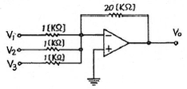
- -2
- -6
- -12
- -18
(정답률: 79%)
5. 다음 중 출력측에 정류 파형의 맥동(ripple) 분을 제거하기 위해 사용되는 것은?
- 증폭회로
- 발진회로
- 평활회로
- 복조회로
(정답률: 75%)
6. 다음 중 진폭변조에서 변조도를 m이라 할 때, 상측파대의 반송파와의 전력비는?
- m
- m2
- 1/2m2
- 1/4m2
(정답률: 69%)
7. 신호를 양자화하기 전에 미약한 신호는 진폭을 크게 하고 진폭이 큰 신호는 진폭을 줄이는 기능은?
- 프리엠퍼시스(Pre-emphasis)
- 압신(Compression-expansion)
- 디엠퍼시스(De-emphasis)
- FM 복조시의 리미팅(Limiting)
(정답률: 64%)
8. 진폭 변조에서 반송파의 주파수가 500kHz이고 신호파의 주파수가 1kHz인 경우 변조파가 차지하는 주파수 점유 대역폭은?
- 1kHz
- 2kHz
- 500kHz
- 502kHz
(정답률: 66%)
9. 다음과 같은 회로의 명칭은?
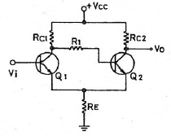
- 시미트 트리거회로
- 차동 증폭회로
- 푸시플 증폭회로
- 부트스트회로
(정답률: 77%)
10. 다음 중 달링턴(Darlington) 회로에 대한 설명으로 거리가 가장 먼 것은?
- 전압 이득이 1보다 적다.
- 전류 이득이 크다.
- 입력 저항이 적다.
- 출력 저항이 적다.
(정답률: 69%)
11. 반송파의 진폭을 신호파의 진폭에 따라서 변화시키는 변조는?
- 주파수변조
- 진폭변조
- 위상변조
- 부호변조
(정답률: 79%)
12. 변조신호 주파수 400Hz, 전압 3V로 주파수 변조하였을 때 변조지수가 50이었다. 이 때 최대 주파수편이 kHz는?
- 20
- 50
- 120
- 300
(정답률: 53%)
13. 잡음지수가 3dB이고 증폭도가 20dB인 전치 증폭기를 잡음지수가 5dB인 종속증폭기에 연결하면 종합잡음지수는?
- 2 dB
- 3.2 dB
- 4 dB
- 5.2 dB
(정답률: 13%)
14. 그림과 같은 연산 증폭기의 출력전압 Vp는? (단, R1=2mΩ, R2=1MΩ, C1=1㎌)
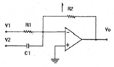
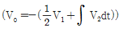
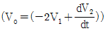
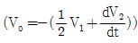
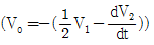
(정답률: 48%)
15. 다음 중 PWM 파를 미분한 후 양(+)의 펄스만을 출력시켜 얻는 변조는?
- PFM
- PNM
- PPM
- PCM
(정답률: 69%)
16. 여러 개의 입력 신호 가운데 하나를 선택하여 출력하는 동작을 하는 것은?
- 디멀티플렉서
- 멀티플렉서
- 레지스터
- 디코더
(정답률: 53%)
17. 반송파의 진폭과 위상을 2원 디지털 입력신호의 정보 내용에 따라 동시에 이산적으로 변환시키는 변조 방식은?
- ASK
- FSK
- PSK
- QAM
(정답률: 43%)
18. 다음 중 논리식
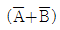
와 등가인 회로는?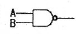
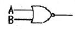
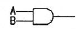
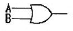
(정답률: 58%)
19. 8진수 5062(8)를 16진수로 변환하면?
- 102C(16)
- CD3(16)
- A32(16)
- 4C2(16)
(정답률: 79%)
20. 논리식 A(A+B+C)를 간단히 하면?
- 1
- 0
- A+B+C
- A
(정답률: 80%)
2과목: 신호기기
21. 어떤 정류기의 부하 전압이 1500V이고 맥동률이 2% 이면 교류분은 몇 V 포함되어 있는가?
- 20V
- 30V
- 40V
- 50V
(정답률: 80%)
22. 신호용 정류기회로의 무부하 전압이 72V이고 전부하 전압이 62V일 때 전압변동률은?
- 12%
- 14%
- 16%
- 25%
(정답률: 74%)
23. 크로우링 현상은 다음 중 어느 기기에서 일어나는 현상인가?
- 직류직권 전동기
- 농형 유도 전동기
- 수은 정류기
- 변압기
(정답률: 73%)
24. 3위식 유극 선조 계전기에 대한 설명으로 옳은 것은?
- 전원이 차단되면 구성되는 접점은 없다.
- 무여자시에 반위 접점만 구성된다.
- 여자시에 정위 접점만 구성된다.
- +극에 전원 +, -극에 전원 -의 전압이 인가되면 45°접점이 구성된다.
(정답률: 75%)
25. 교류 NS형 전기 선로전환기의 동작시험 시 전동기의 슬립 전류는 몇 A이하로 되게 한 후 동작 간에 100kg의 부하를 가하여 전환하여야 하는가?
- 4.5A
- 8.5A
- 10.5A
- 12.5A
(정답률: 50%)
26. 철도 건널목 차단봉이 내려오기 시작하여 동작이 완료되어 정지할 때까지 시간은 정격전압에서 몇 초 이하로 조정하는가?(2015년 03월 27일 개정된 규정 적용됨)
- 일반형 3초~8초, 장대형 5초~12초
- 일반형 4초~10초, 장대형 5초~12초
- 일반형 5초~12초, 장대형 7초~14초
- 일반형 6초~13초, 장대형 8초~15초
(정답률: 56%)
27. 직류 전동기에서 보극을 사용하는 가장 적당한 목적은?
- 회전수를 높이기 위하여
- 전기자 지자력을 증가하기 위하여
- 전기자 반작용을 방지하기 위하여
- 정류를 양호하게 하기 위하여
(정답률: 69%)
28. 사이리스터의 게이트 신호제어는 무엇을 변화시키는 것인가?
- 주파수
- 전류
- 위상각
- 전압
(정답률: 77%)
29. 무극계전기의 무여자접점(독립접점)은 다음 중 어느 것인가?
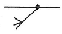
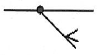
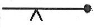
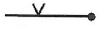
(정답률: 70%)
30. 전기선로전환기(NS형)의 제어계전기로 옳은 것은?
- 유극 2위 자기유지 계전기
- 유극 3위 자기유지 계전기
- 무극 2위 자기유지 계전기
- 무극 선조 계전기
(정답률: 28%)
31. 3상 유도 전동기의 비례추이에 대한 설명으로 틀린 것은?
- 2차 저항을 변화해도 최대 토크는 변하지 않는다.
- 2차 저항을 크게 하면 최대 토크시의 슬립도 커진다.
- 2차 저항을 크게 하면 기동전류는 감소하고 기동 토크는 증가한다.
- 농협 유도 전동기에서 비례추이를 할 수 있다.
(정답률: 39%)
32. 유도 전동기의 Y-△ 기동방식에서 Y결선으로 기동할 때의 전류는 △결선으로 운전할 때보다 어떻게 되는가?
- 3배로 증가
- √3배로 증가
- 1/√3로 감소
- 1/3로 감소
(정답률: 50%)
33. 변압기의 권선을 분할하여 조립하는 이유로 가장 옳은 것은?
- 누설 리액턴스를 줄이기 위하여
- 동손을 줄이기 위하여
- 제3고조파를 제거하기 위하여
- 제5고조파를 제거하기 위하여
(정답률: 72%)
34. 정시간 제어기가 설치되어 있는 건널목을 열차가 60km/h인 속도로 경보개시 시점인 차륜검지기를 지날 때 몇 초 후 경보가 시작되는가? (단, 건널목 제어거리 1000m, 경보시간 40초로 설정)
- 즉시
- 10초 후
- 15초 후
- 20초 후
(정답률: 50%)
35. 직류 직권 전동기가 전차용에 시작되는 이유는?
- 기동토크가 크고, 속도는 불변한다.
- 속도가 클 때 토크가 크다.
- 토크가 클 때 속도가 작다.
- 토크는 전류의 제곱, 출력은 전류에 비례한다.
(정답률: 74%)
36. 변압기 부하가 증가할 때의 현상으로 옳지 않은 것은?
- 온도가 상승한다.
- 동손이 증가한다.
- 철손이 증가한다.
- 여자 전류는 변함없다.
(정답률: 73%)
37. 유도 전동기의 2차측 저항을 2배로 하면 그 최대 회전력은?
- 불변이다.
- 1/2로 된다.
- √배로 된다.
- 2배로 된다.
(정답률: 65%)
38. 변압기 병렬운전의 조건으로 알맞지 않은 것은?
- 극성이 같을 것
- 출력이 같을 것
- 권수비가 같을 것
- 정격전압이 같을 것
(정답률: 74%)
39. 건널목 경보기에 관한 사항이다. 다음 중 2420(201)형 제어자의 발진주파수로 알맞은 것은?
- 20kHz ± 2kHz 이내
- 40kHz ± 2kHz 이내
- 50kHz ± 2kHz 이내
- 60kHz ± 2kHz 이내
(정답률: 60%)
40. 철도 건널목 경보장치에서 경보종의 타종 수는 기당 매분 몇 회 정도인가?
- 40∼60회
- 50∼70회
- 60∼90회
- 70∼100회
(정답률: 79%)
3과목: 신호공학
41. 열차자동정지장치(ATS) 지상자의 코일의 인덕턴스가 0.3mH이고 콘덴서의 용량이 0.0⑤㎌이다. 공진수파수는 약 몇 kHz인가?
- 98
- 110
- 122
- 130
(정답률: 63%)
42. 선로전환기의 정반위 결정에 있어 정위가 아닌 것은?
- 본선과 본선 또는 측선과 측선의 경우는 주요한 방향
- 단선에 있어서 상, 하 본선은 열차가 출발하는 방향
- 본선과 측선과의 경우에는 본선 방향
- 본선 또는 측선과 안전측선의 경우에는 안전측선의 방향
(정답률: 84%)
43. 궤도회로의 사구간은 부득이 한 경우에 몇 m 이하로 하여야 하는가?
- 7
- 8
- 9
- 10
(정답률: 89%)
44. 신호계전기실 및 건널목의 AC 전원의 접지저항은 몇 Ω 이하인가?
- 5
- 10
- 50
- 100
(정답률: 82%)
45. 경부고속철도 열차제어 설비의 최상위 장치로 진로구성에 관한 명령과 제어, 열차간격을 조정하는 기능, 안전 운행의 확보, 각종 보호 기능 등에 관한 기능을 수행하는 시스템은?
- TCS
- IXL
- LCP
- TIDS
(정답률: 87%)
46. 2위식 신호기로 신호 현시를 주의, 진행으로 점등하여 주는 신호기는?
- 엄호신호기
- 입환신호기
- 유도신호기
- 원방신호기
(정답률: 74%)
47. 고속철도용 차축온도검지장치의 차축 검지기 설치에 대한 설명으로 거리가 먼 것은?
- 레일과 레일 사이의 중앙에 설치한다.
- 레일의 상부에서 검지기 상부까지 간격은 40mm±1mm로 한다.
- 레일의 측면에서 검지기 측면까지의 간격은 6mm±1mm로 한다.
- 검지기의 중심이 센서의 셔터중심과 일치하도록 한다.
(정답률: 78%)
48. 다음 중 운전시격의 단축방안으로 거리가 가장 먼 것은?
- 인접궤도와 동극 사용
- 고성능 동력차 사용
- 도착선의 상호 사용
- 유도 신호기의 사용
(정답률: 71%)
49. 무선통신을 이용한 CBTC(communication-based train control) 시스템에서 열차위치를 결정하는 방법이 아닌 것은?
- balise
- inductive loop
- GPS
- tacho generator
(정답률: 79%)
50. 궤도회로 구성요소가 아닌 것은?
- 발리스
- 한류장치
- 전원장치
- 궤도계전기
(정답률: 80%)
51. 다음 상용폐색방식 중 단선구간에서 사용되는 폐색방식이 아닌 것은?
- 자동 폐색식
- 연동 폐색식
- 차내신호 폐색식
- 통표 폐색식
(정답률: 77%)
52. 연속적인 신호파형에서 최고 주파수가 W[Hz]일 때 나이키스트 표본화 주기는?
- 1/2W
- 2W
- 1/W
- W
(정답률: 65%)
53. 궤도회로를 구분하는 각 절연 개소에 설치하여 전차선의 귀선전류를 흐르게 하고 인접궤도회로에 신호전류의 흐름을 막는 역할을 하는 장치는?
- 한류장치
- 임피던스본드
- 레일본드
- 점퍼선
(정답률: 85%)
54. 열차자동감시장치(ATS)가 수행하는 기능으로 거리가 먼 것은?
- 실시간 열차성능감시
- 경보 및 오동작 기록
- 스케줄 구성
- 승강장 혼잡도 분산제어
(정답률: 91%)
55. 어떤 정류가 부하의 양단 평균 전압이 200V, 맥동분의 실효지 전압이 4V일 때 맥동률 %은?
- 2
- 3
- 4
- 5
(정답률: 67%)
56. 방호를 요하는 지점을 통과할 열차에 대하여 신호기 안쪽으로의 진입 가부를 지시하는 신호기는?
- 유도신호기
- 폐색신호기
- 엄호신호기
- 장내신호기
(정답률: 90%)
57. A역의 장내신호가 외방의 접근구간의 길이가 200m이다. 열차의 제동거리가 250m인 열차가 이 선구에 운행된다면 장내신호기에는 어떤 전기쇄정법이 시행되는가?
- 접근쇄정
- 보류쇄정
- 시간쇄정
- 폐로쇄정
(정답률: 74%)
58. 다음 중 궤도회로의 단락감도를 높이기 위한 방법으로 거리가 먼 것은?
- 송전단의 임피던스를 최대한 높게 한다.
- 수전단의 임피던스를 최대한 낮게 한다.
- 단락시의 위상변화를 이용한다.
- 필요이상의 전압을 궤도계전기에 공급하지 않는다.
(정답률: 77%)
59. 다음 중 신호제어 설비의 안전측 동작 원칙으로 거리가 먼 것은?
- 궤도회로는 폐전로식
- 전원과 계전기의 위치를 양단으로 하는 방식
- 계전기 회로는 여자시 기기를 쇄정하는 방식
- 계전기는 무여자시 전원을 차단하는 방식
(정답률: 67%)
60. 연동장치의 쇄정방법 중 “갑”과 “을”의 취급버튼 상호간에 쇄정하는 “갑”의 취급버튼을 정위로 복귀하여도 “을”의 취급버튼은 일정 시간이 경과할 때까지 해정되지 않도록 하는 쇄정은?
- 진로구분쇄정
- 보류쇄정
- 시간쇄정
- 폐로쇄정
(정답률: 90%)
4과목: 회로이론
61. 변압기 n1/n2=30 인 단상 변압기 3개를 1차 △결선, 2차 Y결선 하고 1차 선간에 3000V를 가했을 때 무부하 2차 선간전압 [V]은?
- 100/√3 [V]
- 190/√3 [V]
- 100 [V]
- 100√3 [V]
(정답률: 45%)
62. 어떤 회로의 전압 E, 전류 I일 때
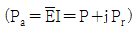
에서 Pr > 0 이다. 이 회로는 어떤 부하인가? (단,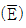
는 E의 공액복소수이다.)- 용량성
- 무유도성
- 유도성
- 정저항
(정답률: 53%)
63. 다음과 같은 회로에서 4단자 정수는 어떻게 되는가?
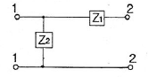
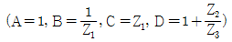
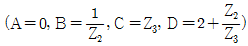
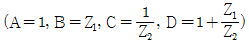
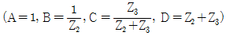
(정답률: 50%)
64. 다음 그림과 같은 전기회로의 입력을 e1, 출력을 e0라고 할 때 전달함수는?
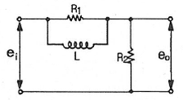
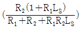
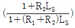
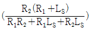
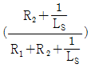
(정답률: 58%)
65. 그림과 같은 RC 직렬회로에 비정현파 전압 v=20+220√2sin120πt+40√2sin360πt[V]를 가할 때 제3고조파전류 i3[A]는 약 얼마인가?
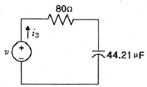
- 0.49sin(360πt-14.04°)
- 0.49√2sin(360πt-14.04°)
- 0.49sin(360πt+14.04°)
- 0.49√2sin(360πt+14.04°)
(정답률: 18%)
66. 내부저항이 15kΩ이고 최대눈금이 150V인 전압계와 내부저항이 10kΩ이고 최대눈금인 150V인 전압계가 있다. 두 전압계를 직렬 접속하여 측정하면 최대 몇 [V]까지 측정할 수 있는가?
- 200
- 250
- 300
- 375
(정답률: 39%)
67. 교류의 파형률이란?
- 최대값/실효값
- 실효값/최대값
- 평균값/실효값
- 실효값/평균값
(정답률: 62%)
68. 그림과 같은 회로에서 15Ω에 흐르는 전류는 몇 A인가?
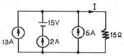
- 4A
- 8A
- 10A
- 20A
(정답률: 64%)
69. 6상 성형 상전압이 200V일 때 선간전압 [V]는?
- 200
- 150
- 100
- 50
(정답률: 65%)
70. 1mV의 입력을 가했을 때 100mV의 출력이 나오는 4단자 회로의 이득 [dB]는?
- 40
- 30
- 20
- 10
(정답률: 62%)
71.
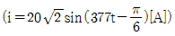
인 파형의 주파수는 몇 [Hz]인가?- 50
- 60
- 70
- 80
(정답률: 77%)
72. RLC 직렬회로에 t=0에서 교류전압 e=Emsin(wt+θ)를 가할 때
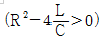
이면 이 회로는?- 진동적이다.
- 비진동적이다.
- 임계적이다.
- 비감쇠진동이다.
(정답률: 71%)
73. 그림과 같은 회로에 교류전압 E=100∠0°[V]를 인가할 때 전전류 I는 몇 [A]인가?
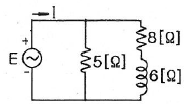
- 6+j28
- 6-j28
- 28+j6
- 28-j6
(정답률: 53%)
74. e-atcoswt의 라플라스 변환은?
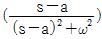
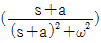
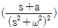
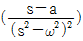
(정답률: 64%)
75. 그림과 같은 회로에서 스위치 S를 t=0 에서 닫았을 때 (VL)t=0=100[V], (di/dt)t=0=400[A/sec]이다. L의 값은 몇 [H]인가?
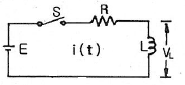
- 0.1
- 0.5
- 0.25
- 7.5
(정답률: 34%)
76.
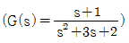
의 특성방정식의 근의 값은?- -2, 3
- 1, 2
- -2, -1
- 1, -3
(정답률: 56%)
77. 다음 회로에서 정저항 회로가 되기 위해서는 1/wC 의 값은 몇 [Ω]이면 되는가?
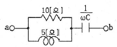
- 2
- 4
- 6
- 8
(정답률: 9%)
78. 그림과 같이 접속된 회로의 단자 a, b에서 본 등가임피던스는 어떻게 표현되는가? (단, M[H]은 두 코일 L1, L2 사이의 상호인덕턴스이다.)
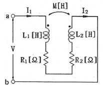
- R1+R2+jw(L1+L2)
- R1+R2+jw(L1-L2)
- R1+R2+jw(L1+L2+2M)
- R1+R2+jw(L1+L2-2M)
(정답률: 44%)
79. 불평형 3상 전류가 Ia=15+j2[A], Ib=-20-j14[A], Ia=-3+j10[A]일 때의 영상전류 Io는?
- 2.85+j0.36[A]
- -2.67-j0.67[A]
- 1.57-j3.25[A]
- 12.67+j2[A]
(정답률: 70%)
80. 그림에서 4단자망의 개방 순방향 전달 임피던스 Z21[Ω]과 단락 순방향 전달 어드미턴스 Y21[Ω]은?
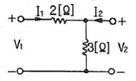
- Z21=5, Y21=-1/2
- Z21=3, Y21=-1/3
- Z21=3, Y21=-1/2
- Z21=5, Y21=-5/6
(정답률: 45%)
피변조파의 평균전력은 진폭변조에서 피크전력의 절반인데, 진폭변조에서 진폭의 변화는 40%이므로, 피크전력은 1.4배가 된다. 따라서, 피변조파의 피크전력은 28kW이다.
피크전력은 진폭의 제곱에 비례하므로, 피변조파의 진폭은 반송파의 진폭의 루트(28kW/10kW) = 1.673배가 된다.
따라서, 피변조파의 평균전력은 (1.673^2) x 10kW = 28.1kW이다.
하지만, 이 문제에서는 보기에 주어진 값 중에서 가장 근접한 값으로 답을 구하라고 하였으므로, 28.1kW에서 가장 근접한 값은 10.8kW이다.